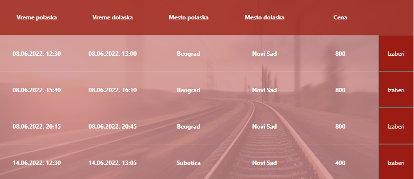
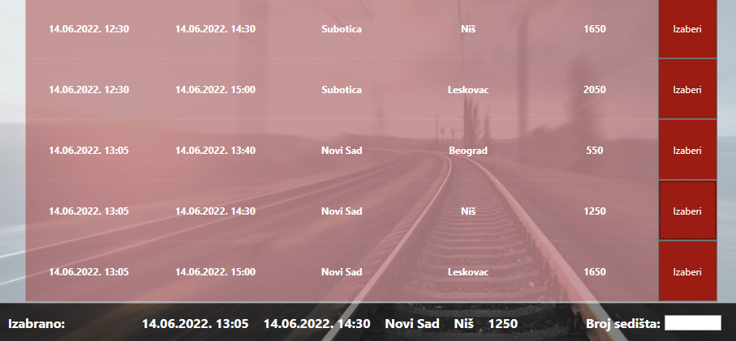
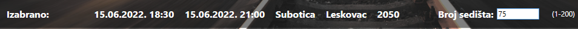
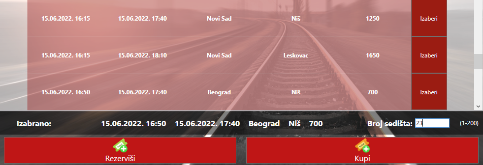
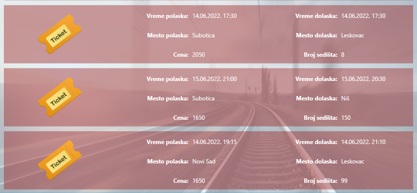
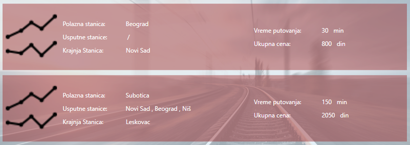
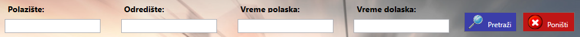
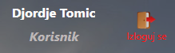

Klijent je u mogućnosti da pregleda dostupan red vožnje. Dostupni su osnovni podaci o svakoj mogućoj ruti. U osnovne podatke o ruti spadaju mesto polaska i mesto dolaska, početno vreme, vreme stizanja na krajnju stanicu, kao i cena karte na toj ruti.
Sistem pomoći za klijente
Na stranici namenjenoj klijentima, klijenti su u mogućnosti da:
- Pregledaju red vožnje
- Izaberu željenu rutu
- Izaberu željeno sedište
- Kupe kartu
- Rezervišu kartu
- Pregledaju kupljene karte
- Pregledaju rezervisane karte
- Pregledaju vozne linije
- Vrše pretragu i filtriranje nad redom vožnje
- Izvrše odjavu sa aplikacije
Pregled reda vožnje
Izbor željene rute
Unutar samog pregleda reda vožnje postoji dugme "Izaberi", ovo dugme klijentu pruža mogućnost izbora rute na kojoj želi da putuje. Pritiskom na ovo dugme klijentu će ispod pregleda reda vožnje biti prikazani osnovni podaci o izabranoj ruti.
Izbor željenog sedišta
Nakon što klijent izabere željenu rutu mora uneti i broj željenog sedišta. Sa desne strane polja za unos broja sedišta nalazi se raspon koji predstavlja brojeve svih sedišta u vozu. Broj sedišta u vozu zavisi od modela voza koji će biti korišćen na toj ruti. Ispravan unos predstavlja numerička vrednost i broj koji se nalazi u rasponu koji je unapred zadat. Ukoliko je izabrano sedište već zauzeto korisnik će o tome biti obavešten i moraće izabrati novo sedište.
Kupovina i rezervacija karte
Posle uspešnog odabira željene rute i željenog sedišta koje je dostupno, klijent je u mogućnosti da rezerviše ili kupiti kartu. Nakon pritiska na dugme "Rezerviši" karta će biti rezervisana. Nakon pritiska na dugme "Kupi" karta će biti kupljena.
Pregled kupljenih i rezervisanih karti
Klikom na dugme "Kupljene karte" ili "Rezervisane karte" klijent će dobiti prikaz svih kupljenih ili svih rezervisanih karti. Svaka karta sadrži osnovne podatke koji su od interesa za korisnika. Mesto i vreme polaska, mesto i vreme dolaska, kao i cenu i broj sedišta.
Pregled voznih linija
Klikom na dugme "Vozne linije" klijent će dobiti prikaz svih voznih linija koje su trenutno operativne. Svaka vozna linija sadrži osnovne podatke koji su od interesa za korisnika. Osnovni podaci o voznoj liniji su: polazna stanica, usputne stanice, krajnja stanica, vreme putovanja od početne do krajnje stanice, kao i ukupnu cenu za kompletno putovanje.
Pretraga i filtriranje po redu vožnje
Klijentu su dostupna četiri polja za unos parametara po kojima će se vršiti pretraga i filtriranje. Ta četiri polja su: "Polazište", "Odredište", "Vreme polaska", "Vreme dolaska". Prva dva polja služe za pretragu po imenu stanice koje predstavljaju polazište ili odredište za rutu. Da bi ruta zadovoljila kriterijum pretrage ime njene stanice mora se u potpunosti poklapati sa unetim imenom u polje za pretagu. Naredna dva polje služe za filtriranje po vremenu polaska odnosno po vremenu dolaska. Unosom ispravnog datuma u polje za vreme polaska i polje za vreme dolaska, klijentu će biti prikazane rute čiji se datumi nalaze u zadatom opsegu. Sa desne strane postoje dva dugmeta "Pretraži" i "Poništi". Klikom na dugme "Pretraži" pokreće se pretraga po zadatim kriterijumima. Klikom na dugme "Poništi" u pregled reda vožnje biće vraćene sve rute.
Odjava sa aplikacije
Klikom na dugme "Izloguj se" klijent će biti odjavljen sa aplikacije.
